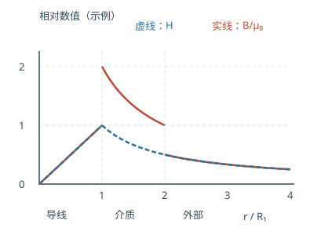

大学物理教材习题 13：介质中的磁场
按题号查看目录 （点击展开）
对应教材下册第 120 页。H 与自由电流相联系；B 描述总磁感应强度；线性各向同性介质中 B=μ₀μᵣH、M=(μᵣ−1)H。铁磁体的 μᵣ 往往随工作状态变化，题目给定时按指定工作点计算。
13-1 螺线环与磁介质
中心线长 L=0.10 m，N=20，I=0.1 A。细环近似下 H₀=NI/L=20 A/m，B₀=μ₀H₀≈2.51×10⁻⁵ T。
充满 μᵣ=4200 的介质且电流不变时，自由电流不变，H 仍约 20 A/m，B=μ₀μᵣH≈0.10556 T。按线性叠加解释，导线自由电流贡献仍为 B₀≈2.51×10⁻⁵ T，磁化电流贡献 B′=B−B₀≈0.10553 T，方向与 B₀ 相同。这里使用理想均匀磁环近似。
先用自由电流求 H：NI＝20×0.1＝2 A，中心线长 0.10 m，因此 H≈NI/L＝20 A/m。空气中 B₀＝μ₀H；填入理想线性介质后电流不变，所以同一路径的 H 仍按同一安培环路求得，但 B 变为 μ₀μᵣH。由 B＝μ₀(H＋M) 可理解多出的磁化贡献；“H 不变”依赖题设的理想磁环近似。
13-2 铜线外包磁介质
假设铜线截面电流均匀、磁介质线性且各区域圆柱对称。取环向为正，安培定理给 H(r)=I包/(2πr)：
- r<R₁：H=Ir/(2πR₁²)，铜的磁化忽略时 B=μ₀H。
- R₁<r<R₂：H=I/(2πr)，B=μ₀μᵣI/(2πr)。
- r>R₂：H=I/(2πr)，B=μ₀I/(2πr)。
因此 H 在 R₁、R₂ 连续；B 的切向分量会因介质磁导率变化而跳变。
外面再套 R₂ 至 R₃ 的金属管后，仅知道“加了金属管”还不足以确定其中是否有回流。若补充常见同轴电缆条件：管内均匀流过 −I，则 R₂<r<R₃ 时 H=I(R₃²−r²)/[2πr(R₃²−R₂²)]，r>R₃ 时 H=0，金属的 B≈μ₀H；前两区不变。若金属管没有净电流，则 r>R₂ 仍为 I/(2πr)，不能擅自当成回流。
画分段曲线的方法：导线内部因包围电流正比 r²，H 正比 r；在导线外、没有其他自由电流的区域，H 正比 1/r。两种材料的分界处，按各自磁导率计算 B＝μH，因此 H 可连续而 B 的切向分量发生变化。第二问只画了外金属筒，没有明确回流大小；若采用同轴电缆的常见假设，必须注明回流方向和分布，再计算外筒中的包围电流。

13-3 有反向回流的同轴电缆
若内实心导体与外圆环导体的电流分别在各自截面均匀分布，H 的分段表达与 13-2 的同轴回流情形相同。由 B=μH 得：导体内 B≈μ₀H；R₁<r<R₂ 的介质中 B=μ₀μᵣI/(2πr)；r>R₃ 为零。
介质内 M⃗=(μᵣ−1)I/(2πr) φ̂，其余区域按题意磁化忽略。题给 μᵣ<1，故 M 与 H 方向相反。若电流分布不是均匀的，导体内部公式需由实际包围电流重新计算。
13-4 测量磁导率
平均磁路长 L=0.01 m，横截面积 S=0.05×10⁻⁴ m²=5×10⁻⁶ m²。按截面场均匀近似，B=Φ/S=6×10⁻⁵/(5×10⁻⁶)=12 T；H=NI/L=200×0.01/0.01=200 A/m。故 μᵣ=B/(μ₀H)≈4.77×10⁴。这个数值是按扫描页给定数据计算的工作点结果；实际材料能否达到 12 T 不能仅凭线性模型保证。
单位先换算：S＝0.05×10⁻⁴ m²＝5×10⁻⁶ m²；通量与截面平均磁感应强度的关系为 B≈Φ/S，所以按题给数据为 12 T。再由 H≈NI/L＝200 A/m，计算 μᵣ＝B/(μ₀H)≈4.77×10⁴。这个结果严格来自题面数值，并依赖磁场均匀和所给数据准确；不能把它当作一般材料参数。
13-5 环形铁芯的磁化强度
细环近似下 H≈NI/(2πr)。若给定绝对磁导率 μ，B=μH；由 B=μ₀(H+M)，得 M=(μ/μ₀−1)NI/(2πr)，方向沿磁场（当 μ>μ₀）。对截面不够细的磁环，H 在不同半径处随 1/r 变化，题中结果应理解为平均半径处近似。
13-6 带空气隙的磁路
设铁芯磁路实际长度为 ℓ铁、气隙宽 b，忽略漏磁和边缘扩散，并取气隙与铁芯有效截面相同，则两处 B 近似相等。安培定理给 NI=H铁ℓ铁+H气b=Bℓ铁/(μ₀μᵣ)+Bb/μ₀，故 B气≈μ₀NI/[b+ℓ铁/μᵣ]。若题目给的 4l 表示完整平均磁路周长，则 ℓ铁≈4l−b；若 4l 已指铁芯材料本身的平均长度，则 ℓ铁=4l。面积 S 在这个等截面积模型中相消；求总磁通时 Φ≈BS。
沿同一闭合磁路将安培环路积分分成铁芯段与气隙段：NI≈H铁ℓ铁＋H气b。忽略漏磁且截面相同时，两段磁通相同，近似 B铁＝B气＝B；分别用 H铁＝B/(μ₀μᵣ)、H气＝B/μ₀ 代入，再解出 B。气隙虽短，却不能省略 H气b，因为空气的磁导率比铁芯小得多。
13-7 有无气隙时的电流
目标 B=1.0 T，μᵣ=796，L=0.500 m，N=1000。无气隙时 H铁=B/(μ₀μᵣ)，I=H铁L/N≈0.500 A。
开宽 d=0.002 m 的气隙，按磁通连续且忽略漏磁、边缘扩散，铁芯长度近似 L−d：I=B[(L−d)/μᵣ+d]/(μ₀N)≈2.09 A。很短的空气隙也需要较大磁势，因为空气的磁导率远低于给定工作点的铁芯；截面面积若两处相同，在计算 B 与 I 的关系时相消。
无气隙时，NI≈HL，而 H＝B/(μ₀μᵣ)，所以 I≈BL/(μ₀μᵣN)≈0.500 A。有气隙后，分别计算铁芯和空气隙的磁势降：NI≈B(L−d)/(μ₀μᵣ)＋Bd/μ₀，代入 d＝0.002 m 得 I≈2.09 A。两式都基于相同截面、忽略漏磁与气隙边缘扩散。
参考资料
- OpenStax：磁性材料：用于核对磁化与磁介质概念。
- OpenStax：安培环路定律：用于核对环路与包围电流的关系。
第 13-2 题的金属外筒是否有回流会改变结果；第 13-6 题的铁芯长度记号可能有两种约定，已分别说明。本页为独立推导，不是官方参考答案。